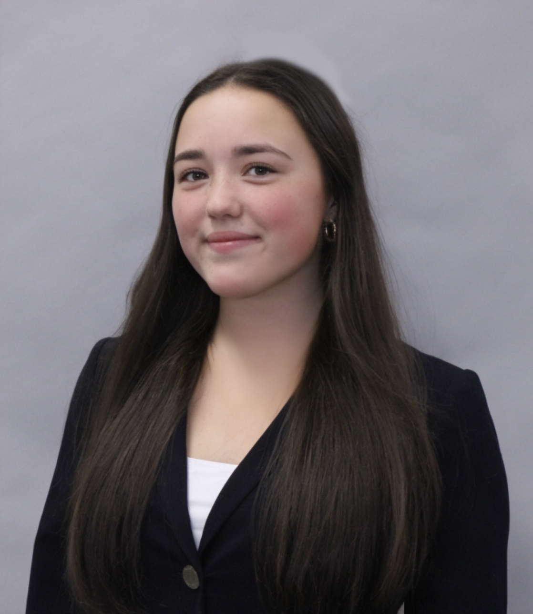

Welcome To My Resume Page

Ariel Tvishor
High School Student
High school student with over 12 years of experience in competitive sports and 3 years of experience with programming. Led teams of 5-15 people to win regional competitions and national tournaments.
Experience
Everyone Can Code Chicago - Intern
June - December 2024
- Developed Local Bean in six weeks, an iOS application focused on diversifying the globalized coffee market and fostering local economic growth.
- Troubleshot and resolved coding issues to ensure efficient and safe user experiences.
- Developed ServiceSync in a group of 4 students in 12 weeks, an iOS application focused on connecting high school students with tailored volunteer opportunities, and promoting local service organizations.
Zhao Lab at the University of Chicago - Researcher
June - August 2025
- Researched the GARP and COG protein complexes in the Golgi Apparatus to discover their function, and potentially understand their role in neurodevelopmental disorders.
- Discovered the optimal fluorescent tag for the protein complexes to ensure effective microscopy imaging, allowing us to track the proteins through cisternal maturation.
- Designed a slideshow and coded graphs in Python to complete a capstone presentation.
Robotics Team - Supreme Leader (1 year), Argonne Leader (2 years)
August 2023 - Present
- Constructed and programmed an autonomous vehicle that placed second and third at Argonne National Laboratories competition, two years in a row.
- 3D designed and engineered an aerodynamic rocket.
- Self-taught C++ code and principles of electrical engineering.
Varsity Girls Lacrosse and Club Lacrosse - Captain (2 years), Assistant Captain (1 year)
March 2023 - Present
- Drove a 1200% increase in wins from freshman to junior year, and leading our team to their first win in sectionals in school history.
- Led the Chicago Public League in goals and points, and placed top 10 in Illinois for goals scored. Also hold the school record for points scored.
- Selected as All-Sectional athlete in 2024 and 2025.
- Travel around the country competing and winning at several tournaments for a state and national team.
Oberweis Dairy - Crew Member
June - September 2024
- Greeted and served 100+ customers daily, in a friendly and welcoming manner, ensuring a positive experience and high level of customer satisfaction.
- Provided detailed information about various ice cream flavors, toppings, and menu items, offering recommendations and pairing suggestions to enhance customer experience.
- Worked closely with team members to streamline operations, including restocking supplies, preparing ingredients, and managing customer flow during peak hours.
Education
Jones College Preparatory
August 2022 - Present
- High Honor Roll
- GPA: 5.23
- National Honore Society, Science National Honor Society Secretary, Computer Science National Honor Society
- All honors and advanced placement classes
- Commended student for National Merit
Volunteer
- Volunteered 8 hours/month with Chicago Teen Mentors foundation, tutoring middle school students in math, transforming their grades from C's to A's
- Volunteer at East Lakeview Chabbad, teaching children how to cook and supervising during arts and crafts
- Founder and president of WE Bracelets, a club that makes friendship bracelets for children's hopsitals, donating over 100 bracelets in the first two years.
- Tutoring students in Honors Physics and Chemistry
Other
- Secretary and HR for Baking Club
- Math team member with competition experience
- Future Business Leaders of America member
- Office work experience at Reproductive Genetics Institue, assiting with packaging and clerical work
- Shadowed a Chief Marketing Officer at Ofi, a large cocoa production company, and wrote a blog post for the brand